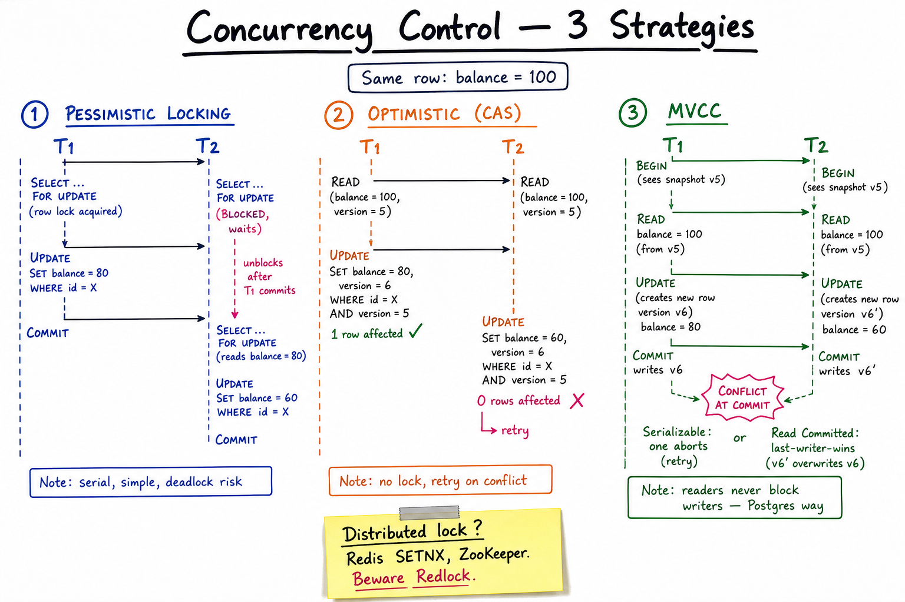

Concurrency Control // Concept
Multiple writers updating the same data. Prevent lost updates, dirty reads, and inconsistent state. Three classic strategies — pessimistic, optimistic, MVCC — plus the distributed-lock minefield.

Three side-by-side sequence diagrams: pessimistic locking (T2 waits), optimistic CAS (T2 retries on conflict), MVCC (each transaction sees its own snapshot, conflicts handled at commit).
01 — What Problem It Solves
LOST UPDATE without concurrency control: Initial balance = 100. T1: read 100, compute 100 - 20 = 80, write 80. T2: read 100, compute 100 - 30 = 70, write 70. Final balance = 70. T1's 20-debit is LOST. WANT: T1 + T2 = balance 50 (both debits applied). 3 fundamental strategies: PESSIMISTIC : "I'll grab a lock so no one else touches it." OPTIMISTIC : "I'll detect conflict at write time and retry." MVCC : "Each transaction sees its own snapshot; resolve at commit."
Single-machine concurrency uses the DB's tools. Distributed concurrency (across services) re-creates the problem at a higher level — CAS columns, distributed locks, or sagas.
01a — Core Vocabulary
| Term | Meaning |
|---|---|
| Pessimistic locking | Acquire lock before reading. Others block. |
| Optimistic locking | Read without lock; verify at write that data hasn't changed (version column). |
| CAS (compare-and-swap) | Atomic "update if value still equals expected." Hardware primitive; SQL has UPDATE ... WHERE version=N. |
| MVCC | Multi-version concurrency control. Each transaction sees a snapshot; writers create new versions; readers don't block writers. |
| Isolation level | SQL's knob: Read Uncommitted < Read Committed < Repeatable Read < Serializable. |
| Dirty read | Read a value another txn wrote but hasn't committed. |
| Non-repeatable read | Same row read twice in one txn returns different values. |
| Phantom read | Range query returns different rows on re-read because someone INSERTed. |
| Deadlock | T1 holds A, waits for B. T2 holds B, waits for A. Forever. |
| Row lock vs table lock | Lock granularity. Row lock = fine, allows concurrency. Table = coarse, simple, kills throughput. |
| Advisory lock | Application-defined lock not tied to any row; used as a mutex. |
02 — Approaches Matrix
| Strategy | How | Best When | Cost |
|---|---|---|---|
| Pessimistic (SELECT FOR UPDATE) | Lock row at read time | High contention, short txn | Blocks readers, deadlock risk |
| Optimistic (CAS / version) | UPDATE ... WHERE version = N; retry on conflict | Low contention | Wasted work on retry; needs version column |
| MVCC (Postgres / Oracle) | Each txn sees a snapshot; new versions created on write; conflicts at commit (Serializable) or last-write-wins (RC) | Mixed read/write, OLTP | Bloat (old versions); VACUUM cost |
| Lock-free CAS (atomic CPU) | Single 64-bit atomic; no DB | Counters, queues, locks | ABA problem; limited to small ops |
| Advisory locks | pg_advisory_lock(id) | Cross-row mutex, app-defined critical section | Manual release; SPOF on the DB |
| Distributed lock (Redis / ZK) | SET key NX EX 30 or ZK ephemeral node | Cross-service mutex | Redlock controversial; correctness needs fencing tokens |
03 — Diagram
Diagram above shows all three on the same "two transactions race on the same row" scenario. Note: in pessimistic, T2 blocks. In optimistic, both proceed but only one COMMITs. In MVCC, each sees its own snapshot, the conflict is detected at COMMIT (under Serializable) or papered over (under Read Committed = last-write-wins on the column).
04 — Pessimistic Locking
BEGIN; SELECT * FROM accounts WHERE id = 5 FOR UPDATE; -- row lock acquired -- T2's identical query BLOCKS here UPDATE accounts SET balance = balance - 20 WHERE id = 5; COMMIT; -- lock released VARIANTS: FOR UPDATE : exclusive lock (blocks reads in some DBs, writes in all) FOR UPDATE NOWAIT : fail immediately if locked (e.g. "try-lock") FOR UPDATE SKIP LOCKED : skip locked rows; useful for work queues FOR SHARE : shared lock; blocks writers, not other readers WHEN PESSIMISTIC IS RIGHT: - Predictably high contention (single hot row). - Short transactions (don't hold locks across user think-time). - Need read-your-write guarantee. WHEN IT'S WRONG: - Long transactions (user input loops). - Cross-request locks (HTTP think-time = 1000s of seconds). - High row count contention → deadlock storm.
FOR UPDATE SKIP LOCKED is a sleeper feature — it's how Postgres-backed job queues claim work atomically without polling collisions.
05 — Optimistic Locking / CAS
SCHEMA: add a "version" column.
T1: SELECT id, balance, version FROM accounts WHERE id = 5;
-- (5, 100, 7)
T2: SELECT id, balance, version FROM accounts WHERE id = 5;
-- (5, 100, 7)
T1: UPDATE accounts
SET balance = 80, version = 8
WHERE id = 5 AND version = 7;
-- 1 row affected → success
T2: UPDATE accounts
SET balance = 70, version = 8
WHERE id = 5 AND version = 7;
-- 0 rows affected → conflict
-- Application re-reads, re-computes, retries.
ALTERNATIVE: timestamp instead of integer version.
WHEN OPTIMISTIC IS RIGHT:
- Low contention (most txns don't conflict).
- Cross-request "edit form" UX (user holds the row mentally for minutes).
- Stateless services (no in-process lock needed).
WHEN IT'S WRONG:
- High contention → retry storm; goes worse than pessimistic.
Distributed services use CAS at the API boundary too: PATCH /payments/123 If-Match: "etag-xyz" → 412 Precondition Failed on conflict.
06 — MVCC (Postgres way)
EVERY row has hidden xmin (created by txn N) + xmax (deleted by txn M).
T1 begins at snapshot S1 (sees rows where xmin ≤ S1 and xmax > S1).
T2 begins at snapshot S2.
T1 UPDATE creates a NEW row version: xmin=S1, xmax=null.
The old row gets xmax=S1.
T2 still sees the OLD row (because xmin=earlier, xmax=S1 not committed yet for T2).
READERS NEVER BLOCK WRITERS. Writers don't block readers. Magic.
VACUUM: periodically reclaims rows where xmax is committed and no one
sees them anymore. Postgres "bloat" = un-vacuumed dead tuples.
UNDER SERIALIZABLE (SSI):
Postgres tracks read sets. On commit, detects dangerous patterns
(rw-anti-dependencies) and aborts one txn with "could not serialize".
UNDER READ COMMITTED (default):
No abort. Lost-update is possible: two txns both UPDATE balance=balance-20
but each saw balance=100 → final balance = 80 instead of 60.
Use SELECT ... FOR UPDATE or a CAS version column to fix.
Postgres at Read Committed + "no FOR UPDATE" is the most common lost-update source in production. Either upgrade isolation or add a CAS column.
07 — SQL Isolation Levels
| Level | Prevents | Allows | Cost |
|---|---|---|---|
| Read Uncommitted | — | Dirty reads | None. Don't use. |
| Read Committed (Postgres default) | Dirty reads | Non-repeatable reads, phantoms, lost updates | Cheap, OK for most OLTP if you use CAS for hot rows |
| Repeatable Read (MySQL InnoDB default) | Dirty + non-repeatable | Phantoms (Postgres prevents some via snapshot) | Medium |
| Serializable (Postgres SSI) | All | — | Aborts on conflict; retry logic required |
Modern advice: Read Committed + per-hot-row CAS / FOR UPDATE; upgrade specific txns to Serializable if the logic is tricky.
08 — Deadlocks: Detection & Avoidance
CLASSIC DEADLOCK: T1: lock A, then lock B T2: lock B, then lock A → cycle; both wait forever. DB does: - Wait-for graph detection (Postgres, MySQL). - On cycle: pick a victim, ABORT it with deadlock_detected. - App must catch and retry. AVOIDANCE TECHNIQUES: 1. Always acquire locks in the SAME ORDER (e.g. lock rows by ascending id). 2. Keep transactions SHORT (commit ASAP). 3. Use lower isolation where you can. 4. Use SKIP LOCKED for work queues. 5. Set statement_timeout / lock_timeout to fail fast instead of starving. WAIT-DIE vs WOUND-WAIT (DB textbook): Wait-die : older txn waits; younger aborts. Wound-wait: older txn aborts younger; younger waits. Both prevent indefinite waits.
09 — Distributed Locks & the Redlock Debate
Redis SETNX-based lock
SET lock:resource_X my-uuid NX PX 30000 -- acquire with 30s TTL ... critical section ... LUA: if get(lock:resource_X) == my-uuid then del lock:resource_X end
Redlock (Redis "majority-of-N-masters")
antirez's algorithm: acquire on majority of N independent Redis masters within a timeout.
The Kleppmann critique
- Clock drift on one Redis node breaks the safety argument.
- A GC pause in your app can outlive the lock TTL — you "hold" the lock but Redis has expired it.
- Fix: fencing tokens. The lock returns a monotonically increasing token; the resource (DB) rejects writes with a stale token.
Better options
| System | Mechanism | Strength |
|---|---|---|
| ZooKeeper | Ephemeral sequential nodes | Linearizable; battle-tested for leader election |
| etcd / Consul | Raft-backed lease + revision number | Linearizable + built-in fencing |
| Postgres advisory lock | pg_advisory_lock(key) | If you already have Postgres, this is the boring right answer |
| Spanner / FoundationDB | True transactions across rows | Avoid the lock entirely |
Interview position: "Redis SETNX is fine for caches and best-effort coordination. For correctness (paying once, releasing a held seat) use ZK/etcd with fencing tokens, or move the contention into a transactional DB (CAS column)."
N-2 — Where It Shows Up
- Uber — CAS on trip-driver assignment (only one driver wins).
- Ticketmaster — seat hold (SELECT FOR UPDATE or version-based CAS).
- Payment system — PaymentIntent versioning to prevent double-charge.
- Job scheduler — SELECT FOR UPDATE SKIP LOCKED for atomic job pickup.
- Google Docs — OT/CRDT, not locks, for collaborative editing.
- Postgres deep dive — MVCC internals.
- Transactions & sagas — concurrency at distributed scale.
- Idempotency — CAS-style retries.
- Consistency models — why isolation level matters.
N-1 — Common Interview Probes
- "Two writes to the same row — what wins?" → depends on isolation + locking.
- "Optimistic or pessimistic?" → contention level.
- "Lost update under Read Committed?" → yes, demo the scenario.
- "How do you do distributed locks?" → ZK/etcd with fencing; not naive Redlock.
- "What's a deadlock and how do you avoid?" → same lock order, short txns.
- "What is MVCC's downside?" → bloat + VACUUM.
- "Why is exactly-once delivery impossible but exactly-once effect possible?" → idempotent CAS.
N — Interview Q&A
When is optimistic better than pessimistic?
Low contention — most txns succeed first try, no lock overhead. Long "think time" between read and write (user editing a form for 2 minutes). Stateless services where holding a DB lock across HTTP boundary is wrong. High contention → pessimistic wins because optimistic retries thrash.
Walk me through a lost update under Postgres Read Committed.
T1 reads balance=100. T2 reads balance=100 (each in its own snapshot, no blocking). T1 UPDATE balance=80 commits. T2 UPDATE balance=70 commits (no FOR UPDATE, no version check) → final = 70. T1's 20-debit is lost. Fix: SELECT ... FOR UPDATE, or CAS column, or Serializable isolation (which would abort T2).
Why doesn't MVCC need locks for reads?
Each transaction is given a snapshot (a list of committed transactions as of its start). Readers consult row visibility via xmin/xmax against the snapshot — they never wait. Writers create a new row version, so they don't overwrite what readers see. Lock acquisition only happens on write-write conflicts.
What's the ABA problem in CAS?
A reads value=A. B changes it to X then back to A. A's CAS(A→Y) succeeds — but A's assumption ("nothing happened") was wrong. Mitigation: include a counter or pointer-tagged version, not just the value. SQL version columns avoid ABA because they monotonically increase.
How does FOR UPDATE SKIP LOCKED help work queues?
Multiple workers all do SELECT * FROM jobs WHERE status='READY' ORDER BY priority LIMIT 10 FOR UPDATE SKIP LOCKED; — each gets a different set of rows, no collisions, no polling stampede. Used by Sidekiq, Que, and most Postgres-backed job systems.
Is Redlock safe?
For best-effort coordination (caches, leader hints) — yes. For correctness (paying once, exclusive resource) — no, Kleppmann's critique stands. The fix: fencing tokens. The lock returns a monotonically increasing token; the resource you're protecting rejects writes with a stale token. ZK, etcd give you that out of the box.
Repeatable Read vs Serializable in Postgres?
Repeatable Read snapshots the data at txn start — same query returns same rows. But it doesn't detect write skew (two txns each reading non-overlapping rows and writing the other's read set). Serializable adds SSI (predicate locks for tracking read sets) — on conflict, one txn aborts with "could not serialize."
How do you avoid deadlocks at scale?
(1) Always acquire locks in the same global order (by primary key). (2) Keep txns short — never hold across an external call. (3) Use lock_timeout + retry rather than wait forever. (4) For unrelated rows, batch UPDATEs by sorted ID. (5) Drop to optimistic + retry instead of pessimistic locking.
Distributed lock or transactional row?
If the resource is in your DB, just use the DB — SELECT ... FOR UPDATE on a "lock row," or advisory lock. Don't pull in a separate system. Use ZK/etcd locks only for cross-DB / cross-system mutexes (singleton job, leader election) where there's no shared transactional DB.
MVCC's hidden cost?
Old row versions accumulate. Postgres VACUUM (autovacuum) must reclaim them. On heavily updated tables, bloat causes performance regression (larger pages, more I/O). Mitigation: tune autovacuum, partition by time so old data falls off, use HOT updates (no index change) where possible.
How does Cassandra do concurrency control?
Last-write-wins by timestamp by default — no isolation. For correctness, Cassandra offers Lightweight Transactions (LWT) using Paxos: UPDATE ... IF version = 5. Paxos is expensive (4 round trips), so use sparingly. Otherwise design schemas to be commutative (CRDT-like).
SDE-2 vs SDE-3 differentiator?
| SDE-2 | SDE-3 |
|---|---|
| Knows optimistic vs pessimistic; mentions SELECT FOR UPDATE | Reasons about isolation level + lost updates; designs CAS schema; understands MVCC bloat + VACUUM; uses SKIP LOCKED for work queues; critiques Redlock and proposes fencing tokens; chooses Postgres advisory lock vs ZK lease; handles ABA; can write the retry loop for Serializable abort |